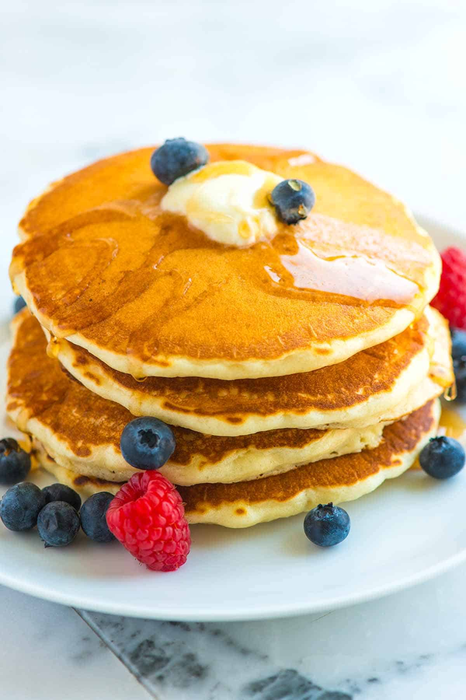

Classic Pancakes
Ingredients
- 1½ cups all-purpose flour
- 3½ tsp baking powder
- 1 tsp salt
- 1 tbsp sugar
- 1¼ cups milk
- 1 egg
- 3 tbsp melted butter
Directions
- Whisk together dry ingredients.
- Add milk, egg and melted butter; mix until combined.
- Cook 1/4 cup batter per pancake on a greased skillet until golden.